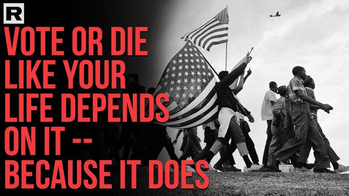

Congress won't move until the pressure gets too big to ignore.
Here's exactly how we build that pressure — and why they can't stop it.
PHIERS exists because Congress won't fix itself — but the people can.
This page explains how.
Free. No spam. Just citizens organizing pressure.
Congress won't move until the pressure gets too big to ignore.
That's not cynicism. That's how the system actually works. For forty years, both parties promised to fix healthcare. Nothing changed — because the pressure was never big enough to force them.
PHIERS is how we build that pressure.
Elected officials don't respond to ideas. They respond to organized voters who are on the record in their district — names, addresses, demands. When that number gets big enough, ignoring it becomes more dangerous than fixing the problem.
When your name and district go on the public record, it becomes political leverage — not an opinion.
Not a tweet. Not a poll. A documented count. Delivered to your rep. Impossible to ignore, impossible to deny, impossible to delete.
"It's not about asking. It's about changing the political math."
Leverage is how ordinary people move systems that feel too big to touch. Here's how it works.
That's how Congress moves. Not because they want to. Because the pressure makes ignoring the people more expensive than fixing the problem.
Every member of Congress cares about three things above everything else:
When enough voters in a district put their names on the record around the same demand, all three hit at once. That's when things change.
Free. No spam. Just citizens organizing pressure.
This isn't complicated. It's three steps — and each one raises the stakes for every member of Congress.
Sign the petition and fill out the district survey. That puts your name, your district, and your demand on the public record. Not a like. Not a comment. A documented count that your rep can't pretend they didn't see. When enough people in a district do this, ignoring them becomes politically dangerous.
1,500 names in your district and your rep has to show up. In public. On camera. And answer. That's when staff start returning calls. Local media starts asking questions. Town halls get called. One district is attention. Many districts is pressure. Enough districts is obligation.
When the same demand appears across districts at the same time, it can't be written off as a local complaint. It becomes a national reckoning. Every rep in every district faces the same choice at the same time — and there's nowhere to hide.

Every district has a threshold. 1,500 verified signatures means your rep has to answer.
Big change doesn't require a majority. It only takes about 3.5% of people actively pushing together.
In America, that's roughly 11.6 million people.
Harvard researcher Erica Chenoweth studied every major movement over more than a century. Her finding: no sustained, nonviolent campaign with active participation from 3.5% of the population had ever failed.
Not one.
The Civil Rights Movement hit it. Labor unions hit it. Women's suffrage hit it. Marriage equality hit it.
Every single time — they won.
When that many people organize around one demand, every elected official knows the number is big enough to:
At that point the safest move for Congress is simple: fix the problem.
Our goal is far bigger than 3.5% — because the stronger the signal, the faster Congress moves. And here's why 100 million isn't a fantasy: when the $600 telehealth plan is on the table, the people who can't afford their current coverage aren't a niche audience. They're the majority. We are the 99% and we are the only show in town. The wealthy have insurance. Everyone else needs us to win.

11.6 million organized people. No nonviolent campaign at this scale has ever failed.

3.5% is the threshold. 100 million is the destination. Same people. Same pressure. Unstoppable.
Free. No spam. Just citizens organizing pressure.
Most movements ask people to sign something and hope politicians listen. PHIERS is different.
Here's how the math changes: when enough Americans unite behind the same demand, every rep faces the same binary — and there's no third door.
Fix the system. Say yes to affordable telehealth in the ACA.
Become the rep who showed up. Who listened. Who solved the problem their neighbors have been paying $10,000 a year to avoid.
Get remembered as a problem-solver in a generation of cowards.
Refuse. Face organized neighbors at every town hall. Face a primary challenger backed by district-level signature data. Face a public record that shows exactly how they voted and why.
Get replaced by someone who will do the job.
"Most politicians choose survival. That's why this works."

Organized constituents versus corporate lobbying. The math is not close.
Free. No spam. Just citizens organizing pressure.
Your rent went up. Groceries cost more. Your wages didn't keep up. Healthcare is the biggest line item — and it delivers the least.
Congress hasn't fixed it because the public has never had the power to force the choice. PHIERS changes that.
Fix the foundation and everything built on top gets stronger. When healthcare costs stop eating your paycheck, workers can change jobs without losing coverage. Unions negotiate wages instead of defending benefits. Families get their breathing room back.
Moments like this go one of two ways — systems break under pressure, or they realign. Realignment requires clarity. Clarity requires documentation. Documentation creates leverage.
This is where PHIERS begins.
Congress is funding wars nobody voted for — no declaration, no mandate, over a billion dollars a day. And now they're talking about a draft.
Now somebody's blowing up oil tankers in the Middle East. When supply chains break, your gas goes up. Your groceries go up. Your rent goes up. That's not foreign policy. That's your kitchen table.
The Constitution says Congress declares war. Not a president, not a contractor. Congress. The people you can replace.
The same organized leverage that forces healthcare fixes ends the unauthorized wars. Same people. Same power. Same consequence for Congress if they ignore us. Fix the mechanism once — and many problems become solvable.
Protest without power gets you a news cycle.
PHIERS gives you the power.

"Power concedes nothing without a demand." — Frederick Douglass
When you sign the petition and fill out the district survey, your name becomes part of a documented public record — organized by district, delivered to your rep.
As participation grows, districts hit their thresholds. Representatives get documented direction from their own neighbors. Town halls get called. Primary challengers get data. The pressure builds district by district until Congress has no safe place to hide.
Your name is not just a number. It's a coordinate on a map of organized political pressure. Every person who understands the system makes the next conversation shorter. Every name makes the next name easier to get.

Because it does. This is about healthcare, your kids, and the people you love.
Sign → Verify → Share → Recruit one person in your district.
That's the rhythm. That's how it wins.

One name starts it. Twelve million makes it unstoppable.
This is your name, your district, your demand — on the public record. Counted. Delivered to your Congress member. Impossible to ignore, impossible to deny, impossible to delete.
1,500 signatures in your district forces a town hall. They have to show up. In public. On camera. And answer.
That's not activism. That's accountability.
"Protest without power gets you a news cycle. PHIERS gives you the power."
Free. No spam. Just citizens organizing pressure.

100 million Americans. July 4, 2026. The destination.
UNBREAKABLE was the proof.
UNSTOPPABLE is the plan.
Now we move.
This is not a dream. It is a deadline.